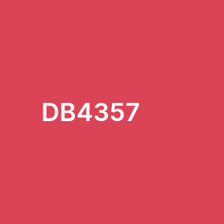

Wireframes

Style guide
Colours

Alice Blue
This colour will serve as the primary background colour, creating a clean look.

Light Sage
This colour will be used as a secondary background for Projects and blogs on top of the primary background

Prussian Blue
This colour, along with black, will be used for text

Amaranth
This colour will serve as the main accent colour

Selective Yellow
This colour will serve as the secondary accent colour
Font: Mulish

This font was chosen for its minimalistic yet clean look. I believe it will bring a unique flare to the website without being too distracting.